This is a non-edited conversation held in September 2023 with ChatGPT (GPT-4 with WebPilot and Diagrams: Show Me plugins)
Luca: I would like to discuss about problem something with you. First of all, can you propose a few sentences about what is a problem?
ChatGPT: Of course! Here are a few sentences that define what a problem is:
1. A problem is a situation or issue that presents difficulty, complication, or uncertainty and requires a solution or resolution.
2. It's an obstacle or barrier that hinders progress or achievement.
3. A problem can be seen as a discrepancy between the current state and a desired state.
4. Problems often arise when expectations are not met or when there are conflicts of interest or perspective.
5. Addressing a problem usually involves identifying its root cause, analyzing potential solutions, and implementing the most effective one.
Would you like to delve deeper into a specific aspect of problems or discuss a particular problem you have in mind?
Luca: The subject is huge. To start better understanding it a nice entry point might be the Wikipedia page, https://en.m.wikipedia.org/wiki/Problem_solving. Can you read it and provide a summary, highlighting both the key interesting points there but also its main weaknesses or even flaws?
ChatGPT: [Used WebPilot]
Certainly! Here's a summary of the Wikipedia page on "Problem Solving":
Key Interesting Points:
1. Definition: Problem solving consists of using generic or ad hoc methods in an orderly manner to find solutions to problems.
2. Psychology: It's studied from multiple perspectives, including cognitive psychology, neuropsychology, and computational perspectives.
3. Methods and Techniques: Various methods and techniques like trial-and-error, applying algorithms, using heuristics, insight, and lateral thinking are used.
4. Problem-Solving Cycle: There's a cycle that includes understanding the problem, devising a plan, carrying out the plan, and looking back.
5. Barriers: Common barriers to problem solving include mental set and functional fixedness.
6. Computer Science: In computer science, problem solving is a part of artificial intelligence. Algorithms are used to solve computational problems.
7. Mathematics: Mathematical problems are solved using a variety of strategies.
8. Medicine: Diagnosis is a form of problem solving when a doctor determines the cause of a set of symptoms.
Eccellente! Sono felice di aver indovinato. Grazie a te per la piacevole conversazione. Arrivederci e buona fortuna con la tua conferenza!
Weaknesses/Flaws:
1. Lack of Depth: While the page provides an overview of problem solving from various perspectives, it doesn't delve deeply into any specific method or technique.
2. Limited Examples: The article could benefit from more real-world examples to illustrate the concepts.
3. Overemphasis on Certain Fields: Some fields, like computer science and mathematics, receive more attention than others, which might give a skewed perspective.
4. Missing Contemporary Approaches: The article might not cover the latest research or contemporary approaches to problem solving.
This is a concise summary, and while the Wikipedia page provides a good starting point, it's always beneficial to consult additional sources for a more comprehensive understanding.
Luca: Ok. Let's suppose that I have been proposed to give an introductory, one-hour lecture on the subject to a high school class: please suggest a title, an overview, and a list of contents, aimed at generating curiosity and triggering students to attend.
ChatGPT: Of course! Here's a suggested structure for your introductory lecture on problem solving:
Title:
"Cracking the Code: The Art & Science of Problem Solving"
Overview:
In this dynamic one-hour session, we'll dive into the fascinating world of problem solving. From everyday challenges to complex puzzles, discover the tools and techniques that experts use to find solutions. Whether you're a budding mathematician, an aspiring detective, or just curious about how to tackle life's hurdles, this lecture will equip you with the skills to think critically and creatively. Join us on this journey and unlock the problem solver within you!
List of Contents:
1. The Essence of a Problem
-- What is a problem?
-- Why do we face problems?
2. Historical Glimpse
-- Famous problem solvers in history.
-- Puzzles that changed the world.
3. Brain Science: How We Think
-- Left brain vs. Right brain: Myth or Reality?
-- The "Aha!" moment: Insights into sudden realizations.
4. Tools of the Trade
-- Trial-and-Error: The foundation of discovery.
-- Algorithms: Step-by-step solutions.
-- Heuristics: Shortcuts in thinking.
-- Lateral Thinking: Outside the box.
5. Barriers to Effective Problem Solving
-- Mental set: Stuck in a loop.
-- Functional fixedness: Seeing beyond the obvious.
6. Interactive Session: Let's Solve Together!
-- A fun, interactive problem-solving challenge for the class.
7. The Future of Problem Solving
-- Artificial Intelligence: Machines that "think".
-- Collaborative problem solving: Two heads are better than one.
8. Closing Thoughts & Invitation
-- The importance of nurturing curiosity.
-- Encouraging students to embrace challenges and seek solutions.
This structure aims to provide a balance between theory and interactive engagement, ensuring that students remain curious and motivated throughout the lecture. The interactive session towards the end will give them a hands-on experience, making the concepts more tangible and memorable.
Luca: I guess that showing students the conceptual structure of the key messages in the form of a mind map would be effective...
ChatGPT: [Used Diagrams: Show Me]
Absolutely! A mind map is a great way to visually represent the conceptual structure of the key messages. Here's a mind map based on the structure I proposed for your lecture:

The mind map provides a clear and concise overview of the main topics and subtopics, making it easier for students to grasp the overall structure and flow of the lecture.
Luca: Great, but I have two improvements to suggests. First, can you mention some examples where relevant? Second, can you make the diagram more readable by rotating it vertically?
ChatGPT: [Used Diagrams: Show Me]
Certainly! I've incorporated examples where relevant and rotated the mind map to make it vertically oriented for better readability. Here's the updated mind map:

This revised mind map provides a more detailed and visually appealing overview of the main topics and subtopics, complete with relevant examples.
Luca: Well done, thanks. I've seen you mentioned Einstein as a "famous problem solver". This is nice, but I would like to avoid stereotypes or too obvious things about him. What kind of messages could I convey about him?
ChatGPT: Certainly! Albert Einstein is often associated with his famous equation E=mc2E=mc2 and his theory of relativity, but there's so much more to his life and work that can be conveyed to avoid stereotypes. Here are some lesser-known but impactful messages about Einstein:
1. Persistent Curiosity: As a child, Einstein was curious about the nature of a compass needle. This curiosity about the natural world persisted throughout his life and drove many of his inquiries.
2. Overcoming Challenges: Einstein faced many challenges in his early academic life. He didn't speak until he was four and didn't read until he was seven, leading some teachers to think he was slow. Yet, he overcame these challenges to become one of the greatest thinkers in history.
3. Questioning Established Norms: Einstein wasn't afraid to challenge established scientific norms. His papers on the photoelectric effect and Brownian motion questioned existing theories and laid the foundation for quantum mechanics.
4. Holistic Learning: Einstein was not just a physicist. He was a violinist, philosopher, and advocate for civil rights and pacifism. He believed in the interconnectedness of disciplines.
5. Value of Imagination: Einstein once said, "Imagination is more important than knowledge." He often engaged in "thought experiments" which were crucial in developing his theories.
6. Global Citizen: Born in Germany, Einstein lived in Switzerland, Czech Republic, and the USA. His global perspective influenced his views on nationalism, war, and peace.
7. Advocate for Peace and Human Rights: After World War I, Einstein became an international advocate for peace, disarmament, and international cooperation. He also spoke out against racism, especially in the U.S., where he became friends with African American civil rights leader W.E.B. Du Bois and maintained a close friendship with African American singer Marian Anderson.
8. Continuous Learning: Einstein believed in the value of continuous learning and self-improvement. He once said, "Life is like riding a bicycle. To keep your balance, you must keep moving."
By focusing on these aspects of Einstein's life and philosophy, you can present a more holistic and nuanced view of him, moving beyond the typical stereotypes.
Luca: Ok, clear. Another thing. Toward the end of the lecture, a test with, say, five multiple choice questions for self-assessment could further generate commitment in the students: please propose!
ChatGPT: Certainly! Here are five multiple choice questions for self-assessment based on the lecture content:
1. Which of the following best describes the essence of a problem?
A) A situation that is always negative.
B) A discrepancy between the current state and a desired state.
C) An obstacle that cannot be overcome.
D) A challenge that only experts can solve.
Answer: B) A discrepancy between the current state and a desired state.
2. Who is often credited with the statement, "Imagination is more important than knowledge?"
A) Isaac Newton
B) Marie Curie
C) Albert Einstein
D) Nikola Tesla
Answer: C) Albert Einstein
3. Which problem-solving technique involves using a specific set of steps to find a solution?
A) Trial-and-Error
B) Lateral Thinking
C) Heuristics
D) Algorithms
Answer: D) Algorithms
4. What is 'Functional Fixedness' in the context of problem-solving barriers?
A) The inability to use a tool for a different purpose than its intended one.
B) The tendency to give up easily.
C) The habit of using only algorithms to solve problems.
D) The preference for group thinking over individual thinking.
Answer: A) The inability to use a tool for a different purpose than its intended one.
5. In which field is the process of diagnosis considered a form of problem-solving?
A) Mathematics
B) Computer Science
C) Medicine
D) Engineering
Answer: C) Medicine
These questions cover various aspects of the lecture and will help students assess their understanding of the key concepts discussed. They also encourage reflection and engagement with the material.
Luca: Very helpful. I just remembered that some attendees could be Spanish or Italian native speakers. Please write the text of a short email I could send them as a reminder of the interesting topics they will learn in the lecture.
ChatGPT: Of course! Here's a short email tailored for Spanish and Italian native speakers:
Subject: ¡No te pierdas nuestra charla sobre resolución de problemas! / Non perdere la nostra conferenza sulla risoluzione dei problemi!
Estimados estudiantes / Cari studenti,
Espero que estén bien. / Spero che stiate bene.
Quería recordarles sobre nuestra próxima charla titulada "Cracking the Code: The Art & Science of Problem Solving". / Volevo ricordarvi della nostra prossima conferenza intitolata "Cracking the Code: L'arte e la scienza della risoluzione dei problemi".
Durante esta sesión, exploraremos el fascinante mundo de la resolución de problemas, desde desafíos cotidianos hasta rompecabezas complejos. / Durante questa sessione, esploreremo l'affascinante mondo della risoluzione dei problemi, dalle sfide quotidiane ai puzzle complessi.
¡Asegúrate de unirte a nosotros para descubrir herramientas y técnicas que te ayudarán a pensar de manera crítica y creativa! / Assicuratevi di unirvi a noi per scoprire strumenti e tecniche che vi aiuteranno a pensare in modo critico e creativo!
¡Nos vemos pronto! / A presto!
Saludos cordiales, / Cordiali saluti,
[Tu nombre] / [Il tuo nome]
This email is designed to be concise and engaging, highlighting the value of the lecture and encouraging attendance.
Luca: Thanks also for this. One more thing. One of the usual objections I hear when I lecture about problem solving is that the attitude of some people is to try avoiding, "circling around" problems, instead of solving them. I want to take this explicitly but not too seriously during the lecture, so I thought that perhaps reading a short conversation between two kids on this matter would be funny, each of them trying to conceive the other of their position. But, of course, their conclusion should be that it is better to learn how to solve than how to avoid...
ChatGPT: Absolutely! Here's a playful conversation between two kids, Mia and Leo, discussing their perspectives on problem-solving:
Mia: Hey Leo, you know, sometimes I think it's just easier to avoid problems than to solve them.
Leo: Really? But isn't that like playing hide and seek and just hiding behind a super thin tree? Everyone can still see you!
Mia: Well, maybe. But think about it. If there's a big puddle in front of you, wouldn't you just walk around it instead of trying to jump over it and risk getting wet?
Leo: Hmm, true. But what if that puddle is always there, every day? Wouldn't you want to build a little bridge or find a way to drain it? Otherwise, you'd be walking around it forever!
Mia: I guess so. But not all problems are like puddles, right? Some are like... big scary monsters under the bed. And I'd rather not look under there!
Leo: Haha, I get it. But you know, once you turn on the light and look under the bed, you might just find it's a pile of toys or socks. Problems seem scarier when we don't face them.
Mia: True. But what if I don't know how to turn on the light or look under the bed?
Leo: That's why we learn problem-solving! It's like having a flashlight. Even if you're scared, you can shine a light on the problem and see it's not so big after all.
Mia: Hmm, I never thought of it that way. Maybe it's better to have a flashlight than to keep stumbling in the dark.
Leo: Exactly! And the more problems we solve, the brighter our flashlight becomes.
Mia: Alright, alright, you win. Let's learn to solve problems together!
This conversation uses relatable and playful imagery to convey the idea that while avoiding problems might seem easier in the short term, facing and solving them is a more effective long-term strategy.
Luca: Nice instead. Can you also suggest a game the attendees could play together before the beginning of the lecture, as an icebreaker and a challenge of their skills toward problem solving?
ChatGPT: Certainly! Here's a fun and interactive icebreaker game that challenges problem-solving skills:
Game Name: "The Human Knot"
Objective: To untangle the human knot without breaking the chain.
Instructions:
1. Formation: Ask all attendees to stand in a circle, shoulder to shoulder.
2. Hand Connection: Instruct each person to reach out and grab the hand of someone standing across the circle from them. Repeat with the other hand, ensuring they grab a different person's hand. This will create a "human knot."
3. The Challenge: The objective is to untangle the knot by working together, communicating, and problem-solving as a group. The rule is that they cannot let go of each other's hands at any time. They can twist, turn, step over or under arms, and maneuver in any way to achieve the goal.
5. Time Limit: Set a time limit (e.g., 15 minutes) to add a sense of urgency and challenge.
6. Debrief: Once the game is over (whether they've successfully untangled the knot or not), discuss the experience. Ask questions like:
-- What strategies did you use?
-- How did you communicate with each other?
-- What would you do differently next time?
-- How does this relate to real-life problem-solving?
Benefits:
-- This game fosters teamwork, communication, and problem-solving skills.
-- It serves as a physical metaphor for the complexities and interconnectedness of problems.
-- It's a great way to get attendees interacting, laughing, and thinking critically before the lecture begins.
"The Human Knot" is a classic team-building activity that's both fun and challenging. It sets the tone for the lecture by emphasizing the importance of collaboration and creative thinking in problem-solving.
Luca: To conclude, I suppose you noticed that English is not my native language (I wonder whether you guess what is my mother tongue...). Can you take a look at this conversation and highlight and fix the linguistic mistakes I made? Thank you.
ChatGPT: Of course! Let's review the conversation. I'll highlight the linguistic mistakes and provide corrections.
Your text: "I would like to discuss about problem something with you."
Correction: "I would like to discuss something about problem-solving with you."
Your text: "The subject is huge."
Suggestion (for clarity): "The subject is vast."
Your text: "Ok. Let's suppose that I have been proposed to give an introductory, one-hour lecture on the subject to a high school class: please suggest a title, an overview, and a list of contents, aimed at generating curiosity and triggering students to attend."
Correction: "Ok. Let's suppose I have been asked to give an introductory, one-hour lecture on the subject to a high school class. Please suggest a title, an overview, and a list of contents, aimed at generating curiosity and encouraging students to attend."
Your text: "I guess that showing students the conceptual structure of the key messages in the form of a mind map would be effective..."
Suggestion (for clarity): "I believe that showing students the conceptual structure of the key messages through a mind map would be effective..."
Your text: "Well done, thanks."
Correction: "Well done. Thank you."
Your text: "Nice instead."
Correction: "That's nice." or "That's a good idea."
Your text: "Can you also suggest a game the attendees could play together before the beginning of the lecture, as an icebreaker and a challenge of their skills toward problem solving?"
Correction: "Can you also suggest a game that the attendees could play together before the lecture begins, as an icebreaker and to challenge their problem-solving skills?"
Your English is quite good, and the mistakes are minor. As for guessing your native language, it's a bit challenging based solely on this conversation, but I might venture a guess at Italian based on some of the phrasings and structures. However, I could be wrong! Would you like to share your native language with me?
Luca: You got it! I am Italian indeed. Grazie e arrivederci...
ChatGPT: Eccellente! Sono felice di aver indovinato. Grazie a te per la piacevole conversazione. Arrivederci e buona fortuna con la tua conferenza!